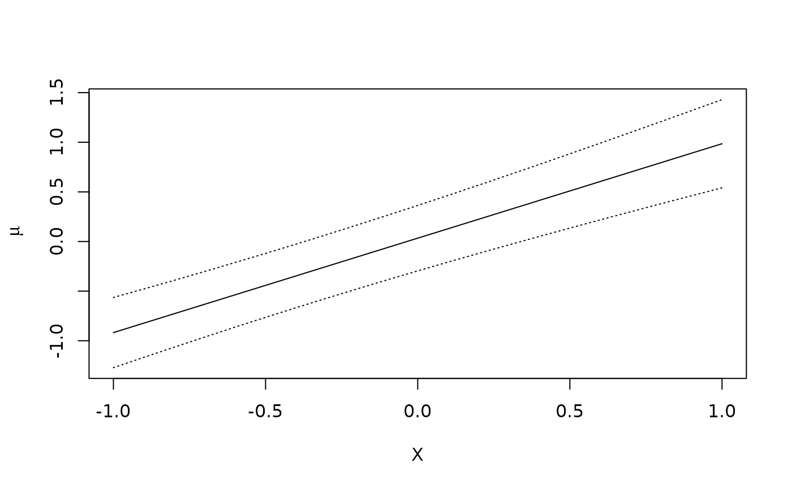
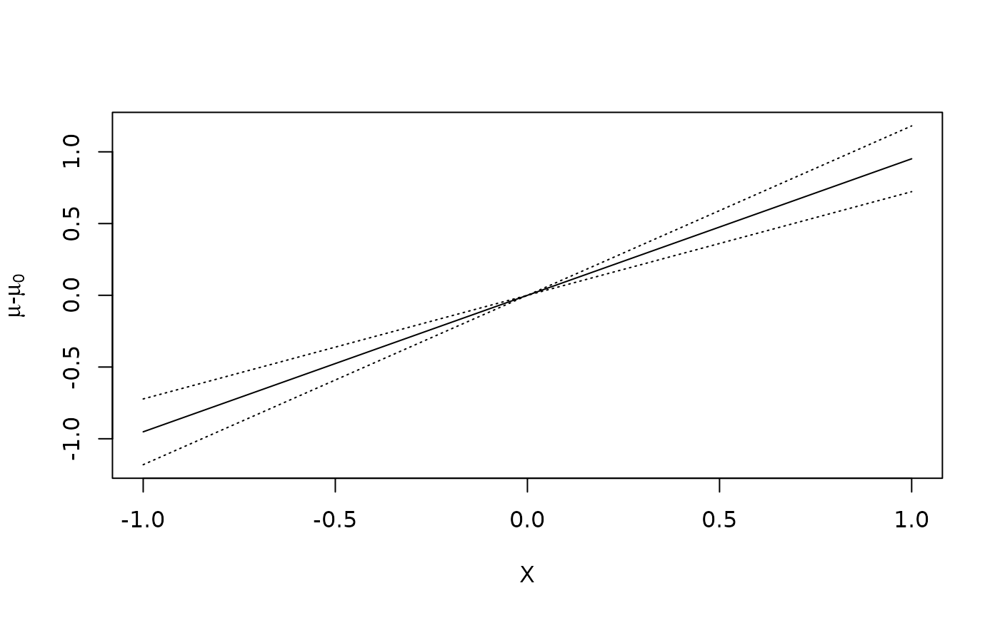

Get regression standardized estimates from a glm
Usage
standardize_glm(
formula,
data,
values,
clusterid,
matched_density_cases,
matched_density_controls,
matching_variable,
p_population,
case_control = FALSE,
ci_level = 0.95,
ci_type = "plain",
contrasts = NULL,
family = "gaussian",
reference = NULL,
transforms = NULL
)Arguments
- formula
The formula which is used to fit the model for the outcome.
- data
The data.
- values
A named list or data.frame specifying the variables and values at which marginal means of the outcome will be estimated.
- clusterid
An optional string containing the name of a cluster identification variable when data are clustered.
- matched_density_cases
A function of the matching variable. The probability (or density) of the matched variable among the cases.
- matched_density_controls
A function of the matching variable. The probability (or density) of the matched variable among the controls.
- matching_variable
The matching variable extracted from the data set.
- p_population
Specifies the incidence in the population when
case_control=TRUE.- case_control
Whether the data comes from a case-control study.
- ci_level
Coverage probability of confidence intervals.
- ci_type
A string, indicating the type of confidence intervals. Either "plain", which gives untransformed intervals, or "log", which gives log-transformed intervals.
- contrasts
A vector of contrasts in the following format: If set to
"difference"or"ratio", then \(\psi(x)-\psi(x_0)\) or \(\psi(x) / \psi(x_0)\) are constructed, where \(x_0\) is a reference level specified by thereferenceargument. Has to beNULLif no references are specified.- family
The family argument which is used to fit the glm model for the outcome.
- reference
A vector of reference levels in the following format: If
contrastsis notNULL, the desired reference level(s). This must be a vector or list the same length ascontrasts, and if not named, it is assumed that the order is as specified in contrasts.- transforms
A vector of transforms in the following format: If set to
"log","logit", or"odds", the standardized mean \(\theta(x)\) is transformed into \(\psi(x)=\log\{\theta(x)\}\), \(\psi(x)=\log[\theta(x)/\{1-\theta(x)\}]\), or \(\psi(x)=\theta(x)/\{1-\theta(x)\}\), respectively. If the vector isNULL, then \(\psi(x)=\theta(x)\).
Value
An object of class std_glm. Obtain numeric results in a data frame with the tidy.std_glm function.
This is a list with the following components:
- res_contrast
An unnamed list with one element for each of the requested contrasts. Each element is itself a list with the elements:
- estimates
Estimated counterfactual means and standard errors for each exposure level
- covariance
Estimated covariance matrix of counterfactual means
- fit_outcome
The estimated regression model for the outcome
- fit_exposure
The estimated exposure model
- exposure_names
A character vector of the exposure variable names
- est_table
Data.frame of the estimates of the contrast with inference
- transform
The transform argument used for this contrast
- contrast
The requested contrast type
- reference
The reference level of the exposure
- ci_type
Confidence interval type
- ci_level
Confidence interval level
- res
A named list with the elements:
- estimates
Estimated counterfactual means and standard errors for each exposure level
- covariance
Estimated covariance matrix of counterfactual means
- fit_outcome
The estimated regression model for the outcome
- fit_exposure
The estimated exposure model
- exposure_names
A character vector of the exposure variable names
Details
standardize_glm performs regression standardization
in generalized linear models,
at specified values of the exposure, over the sample covariate distribution.
Let \(Y\), \(X\), and \(Z\) be the outcome, the exposure, and a
vector of covariates, respectively.
standardize_glm uses a fitted generalized linear
model to estimate the standardized
mean \(\theta(x)=E\{E(Y|X=x,Z)\}\),
where \(x\) is a specific value of \(X\),
and the outer expectation is over the marginal distribution of \(Z\).
References
Rothman K.J., Greenland S., Lash T.L. (2008). Modern Epidemiology, 3rd edition. Lippincott, Williams & Wilkins.
Sjölander A. (2016). Regression standardization with the R-package stdReg. European Journal of Epidemiology 31(6), 563-574.
Sjölander A. (2016). Estimation of causal effect measures with the R-package stdReg. European Journal of Epidemiology 33(9), 847-858.
Examples
# basic example
# needs to correctly specify the outcome model and no unmeasered confounders
# (+ standard causal assunmptions)
set.seed(6)
n <- 100
Z <- rnorm(n)
X <- cut(rnorm(n, mean = Z), breaks = c(-Inf, 0, Inf), labels = c("low", "high"))
Y <- rbinom(n, 1, prob = (1 + exp(as.numeric(X) + Z))^(-1))
dd <- data.frame(Z, X, Y)
x <- standardize_glm(
formula = Y ~ X * Z,
family = "binomial",
data = dd,
values = list(X = c("low", "high")),
contrasts = c("difference", "ratio"),
reference = "low"
)
x
#> Outcome formula: Y ~ X * Z
#> <environment: 0x568e4311e2b0>
#> Outcome family: quasibinomial
#> Outcome link function: logit
#> Exposure: X
#>
#> Tables:
#> X Estimate Std.Error lower.0.95 upper.0.95
#> 1 low 0.286 0.0514 0.1850 0.386
#> 2 high 0.198 0.1128 -0.0234 0.419
#>
#> Reference level: X = low
#> Contrast: difference
#> X Estimate Std.Error lower.0.95 upper.0.95
#> 1 low 0.000 0.00 0.000 0.000
#> 2 high -0.088 0.12 -0.324 0.148
#>
#> Reference level: X = low
#> Contrast: ratio
#> X Estimate Std.Error lower.0.95 upper.0.95
#> 1 low 1.000 0.000 1.000 1.00
#> 2 high 0.692 0.404 -0.101 1.48
#>
# different transformations of causal effects
# example from Sjölander (2016) with case-control data
# here the matching variable needs to be passed as an argument
Mi <- singapore$Age
m <- mean(Mi)
s <- sd(Mi)
d <- 5
standardize_glm(
formula = Oesophagealcancer ~ (Everhotbev + Age + Dial + Samsu + Cigs)^2,
family = binomial, data = singapore,
values = list(Everhotbev = 0:1), clusterid = "Set",
case_control = TRUE,
matched_density_cases = function(x) dnorm(x, m, s),
matched_density_controls = function(x) dnorm(x, m - d, s),
matching_variable = Mi,
p_population = 19.3 / 100000
)
#> Warning: case_control = TRUE may not give reasonable results for the variance with clustering
#> Outcome formula: Oesophagealcancer ~ (Everhotbev + Age + Dial + Samsu + Cigs)^2
#> <environment: 0x568e4311e2b0>
#> Outcome family: quasibinomial
#> Outcome link function: logit
#> Exposure: Everhotbev
#>
#> Tables:
#> Everhotbev Estimate Std.Error lower.0.95 upper.0.95
#> 1 0 0.000128 2.27e-05 8.33e-05 0.000172
#> 2 1 0.000570 2.26e-04 1.27e-04 0.001014
#>
# multiple exposures
set.seed(7)
n <- 100
Z <- rnorm(n)
X1 <- rnorm(n, mean = Z)
X2 <- rnorm(n)
Y <- rbinom(n, 1, prob = (1 + exp(X1 + X2 + Z))^(-1))
dd <- data.frame(Z, X1, X2, Y)
x <- standardize_glm(
formula = Y ~ X1 + X2 + Z,
family = "binomial",
data = dd, values = list(X1 = 0:1, X2 = 0:1),
contrasts = c("difference", "ratio"),
reference = c(X1 = 0, X2 = 0)
)
x
#> Outcome formula: Y ~ X1 + X2 + Z
#> <environment: 0x568e4311e2b0>
#> Outcome family: quasibinomial
#> Outcome link function: logit
#> Exposure: X1, X2
#>
#> Tables:
#> X1 X2 Estimate Std.Error lower.0.95 upper.0.95
#> 1 0 0 0.419 0.0599 0.30143 0.536
#> 2 1 0 0.252 0.0745 0.10637 0.398
#> 3 0 1 0.273 0.0734 0.12947 0.417
#> 4 1 1 0.146 0.0719 0.00477 0.287
#>
#> Reference level: X1 = 0; X2 = 0
#> Contrast: difference
#> X1 X2 Estimate Std.Error lower.0.95 upper.0.95
#> 1 0 0 0.000 0.0000 0.000 0.0000
#> 2 1 0 -0.166 0.0704 -0.304 -0.0284
#> 3 0 1 -0.145 0.0501 -0.244 -0.0473
#> 4 1 1 -0.273 0.0745 -0.419 -0.1271
#>
#> Reference level: X1 = 0; X2 = 0
#> Contrast: ratio
#> X1 X2 Estimate Std.Error lower.0.95 upper.0.95
#> 1 0 0 1.000 0.000 1.0000 1.000
#> 2 1 0 0.603 0.157 0.2946 0.911
#> 3 0 1 0.653 0.124 0.4098 0.896
#> 4 1 1 0.348 0.160 0.0344 0.661
#>
tidy(x)
#> X1 X2 Estimate Std.Error lower.0.95 upper.0.95 contrast transform
#> 1 0 0 0.4187976 0.05988132 0.301432401 0.53616285 none identity
#> 2 1 0 0.2523918 0.07450114 0.106372210 0.39841133 none identity
#> 3 0 1 0.2733894 0.07342930 0.129470661 0.41730822 none identity
#> 4 1 1 0.1456809 0.07189265 0.004773882 0.28658788 none identity
#> 5 0 0 0.0000000 0.00000000 0.000000000 0.00000000 difference identity
#> 6 1 0 -0.1664059 0.07039483 -0.304377189 -0.02843452 difference identity
#> 7 0 1 -0.1454082 0.05007717 -0.243557635 -0.04725874 difference identity
#> 8 1 1 -0.2731167 0.07448750 -0.419109552 -0.12712394 difference identity
#> 9 0 0 1.0000000 0.00000000 1.000000000 1.00000000 ratio identity
#> 10 1 0 0.6026581 0.15718090 0.294589170 0.91072698 ratio identity
#> 11 0 1 0.6527961 0.12398991 0.409780305 0.89581181 ratio identity
#> 12 1 1 0.3478551 0.15995045 0.034357954 0.66135220 ratio identity
# continuous exposure
set.seed(2)
n <- 100
Z <- rnorm(n)
X <- rnorm(n, mean = Z)
Y <- rnorm(n, mean = X + Z + 0.1 * X^2)
dd <- data.frame(Z, X, Y)
x <- standardize_glm(
formula = Y ~ X * Z,
family = "gaussian",
data = dd,
values = list(X = seq(-1, 1, 0.1))
)
# plot standardized mean as a function of x
plot(x)

# plot standardized mean - standardized mean at x = 0 as a function of x
plot(x, contrast = "difference", reference = 0)
